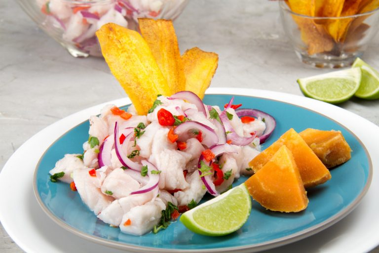

Home
Ceviche

Description
Delicious sea fish marinated in lime juice and chilli, with red onion, hot peppers, thinly sliced plantain, and wedges of sweet potato
Ingredients
For the Ceviche
- 1 kg white fish fillet (Mahi-Mahi)
- 1/2 kg lemon
- 1/2 kg lime
- 1 small purple onion
- 3 medium peppers (habanero red peppers)
- 1/2 cup fresh coriander
- 1 teaspoon ginger (grated)
- Salt to taste
For accompaniment (optional)
- 2 medium sweet potatoes
- 1 cup yellow corn
- plantain chips
Steps
- Wash and dry the fish. Cut the fish into cubes of approximately 2 cm. Remove any remaining skin, scales or spines. It is important that you only have cubes of lean meat similar in size. Put the fish to the side.
- Wash the lemons and limes. Squeeze them into a large bowl. Strain the fresh lime juice and lemon juice to remove any seeds.
- This lime juice will serve to cook the fish by the marination process. Put the fish cubes into the juice marinade. Make sure that all the flesh is covered by the juice. Cover the container and store in the fridge for about 20 to 30 minutes. Use some ice cubes to cool the fish faster. From time to time check that the fish is “cooking” and turn gently so that each piece gets plenty of contact with the lime juice.
- While the fish cooks, prepare the garnish. Wash the sweet potatoes with a brush and place in a steamer for about 30 minutes, until they are tender. When the potatoes are soft, remove from the steamer, remove the skin and cut into large pieces.
- Peel the plantain and cut in half, crosswise. With the help of a potato peeler cut the plantain into very thin slices. Place the slices or chips in a pan with enough oil to deep fry them. Make sure they don’t touch. With a wooden pallet, stir from time to time. Carefully remove the plantain from the oil and place them on a plate covered with absorbent paper.
- Wash the red peppers and onion. Open the peppers, remove the seeds and veins and cut into small squares. Peel the onion and cut it into thin strips. Finely cut the coriander.
- Remove the ceviche from the refrigerator – the meat should already look cooked (the flesh should be opaque and about to fall apart). Add onion, chili and coriander, ginger, a pinch of salt and stir. Cover the ceviche again and leave it in the fridge for about 10 more minutes.
- Remove the ceviche from the refrigerator and place in cups or small plates. Serve with the plantain chips, and sweet potatoes. Sprinkle with some coriander and ají limo chili pepper.